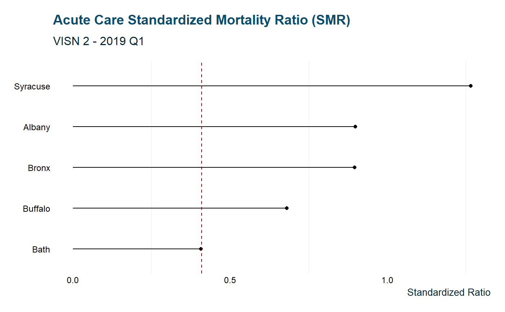
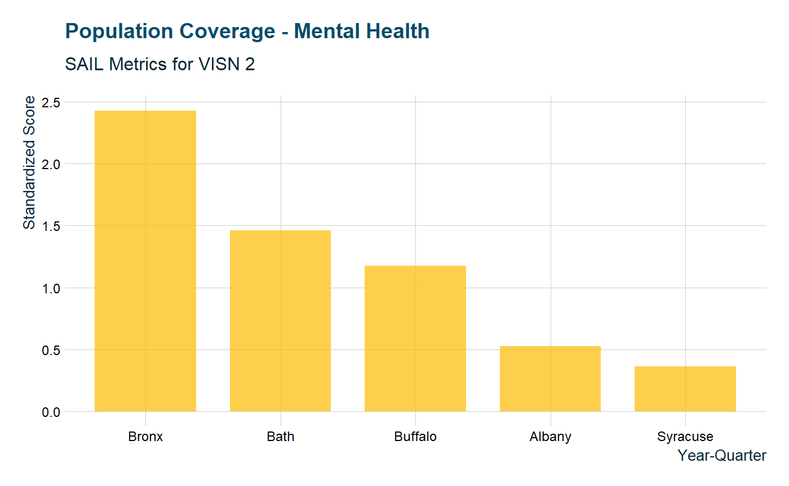

VA SAIL metrics are a way of summarizing VA hospital performance data. Individual data sets by location are available for download from VA.gov. These are excel datasets formatted with banners and special characters.
When provided a file’s url, sail_tidy downloads, imports, and wrangles the dataset into a format that’s easier to utilize in R.
library(tidyVA)
albany_sail <- sail_tidy("https://www.va.gov/QUALITYOFCARE/SAIL_FY19_Q1/SAIL-2_albany_fy19q1.xlsx")
glimpse(albany_sail)
#> Observations: 79
#> Variables: 6
#> $ Measure <chr> "Acute care mortality", "1. Acute care ...
#> $ `Measure Unit` <chr> NA, "O/E", "O/E", "%", "%", "%", "%", "...
#> $ `Best 10%` <chr> NA, "0.469", "0.740", "7.219", "5.676",...
#> $ `10th-50th-90th ptile` <chr> NA, "0.469 - 0.857 - 1.193", "0.740 - 0...
#> $ Site <chr> "Albany", "Albany", "Albany", "Albany",...
#> $ Value <chr> NA, "0.898", "0.923", "8.191", "8.726",...Using map_df from the purrr package you can create a data frame of metrics from several sites:
albany <- "https://www.va.gov/QUALITYOFCARE/SAIL_FY19_Q1/SAIL-2_albany_fy19q1.xlsx"
syracuse <- "https://www.va.gov/QUALITYOFCARE/SAIL_FY19_Q1/SAIL-2_syracuse_fy19q1.xlsx"
bath <- "https://www.va.gov/QUALITYOFCARE/SAIL_FY19_Q1/SAIL-2_bath_fy19q1.xlsx"
buffalo <- "https://www.va.gov/QUALITYOFCARE/SAIL_FY19_Q1/SAIL-2_buffalo_fy19q1.xlsx"
bronx <- "https://www.va.gov/QUALITYOFCARE/SAIL_FY19_Q1/SAIL-2_bronx_fy19q1.xlsx"
links <- c(albany, syracuse, bath,
buffalo,bronx)
data <- purrr::map_df(links, sail_tidy)This can then easily be explored within the tidyverse
unique(data$Measure)
#> [1] "Acute care mortality"
#> [2] "1. Acute care Standardized Mortality Ratio (SMR)"
#> [3] "2. Acute care 30-day Standardized Mortality Ratio (SMR30)"
#> [4] "a. AMI RSMR"
#> [5] "b. CHF RSMR"
#> [6] "c. Pneumonia RSMR"
#> [7] "d. COPD RSMR"
#> [8] "e. Stroke RSMR"
#> [9] "Avoidable adverse events"
#> [10] "1. In-hospital complications"
#> [11] "2. Healthcare associated infections (HAI)"
#> [12] "a. Catheter associated urinary tract infection"
#> [13] "b. Central line associated bloodstream infection"
#> [14] "c. Ventilator associated events (IVAC Plus)"
#> [15] "d. Methicillin-resistant Staphylococcus aureus (MRSA) infection"
#> [16] "e. C. difficile infection"
#> [17] "3. Patient safety indicator (PSI Average Standardized Score)"
#> [18] "4. Post acute care events"
#> [19] "Length of Stay and Throughput"
#> [20] "1. Adjusted length of stay"
#> [21] "2. Utilization management"
#> [22] "a. Admission reviews met, adjusted"
#> [23] "b. Continued stay reviews met, adjusted"
#> [24] "3. ED Throughput"
#> [25] "a. Percent left without being seen"
#> [26] "b. Median time from ED arrival to ED departure for admitted patients (EDIS)"
#> [27] "c. Admit decision time to ED departure time for admitted patients (EDIS)"
#> [28] "Care Transition"
#> [29] "1. Ambulatory Care Sensitive Condition hospitalizations"
#> [30] "2. Hospital-wide 30-day readmission rate"
#> [31] "a. Cardiorespiratory cohort"
#> [32] "b. Cardiovascular cohort"
#> [33] "c. Medicine cohort"
#> [34] "d. Neurology cohort"
#> [35] "e. Surgical cohort"
#> [36] "3. Disease specific 30-day readmission rate"
#> [37] "a. AMI RSRR"
#> [38] "b. CHF RSRR"
#> [39] "c. Pneumonia RSRR"
#> [40] "d. COPD RSRR"
#> [41] "e. Stroke RSRR"
#> [42] "Patient Experience"
#> [43] "1. Overall rating of hospital (inpatient)"
#> [44] "2. Overall rating of primary care providers"
#> [45] "3. Overall rating of specialty care providers"
#> [46] "4. Care Transition (inpatient)"
#> [47] "5. PCMH Stress Discussed (Q40)"
#> [48] "6. PCMH care coordination"
#> [49] "7. Specialty care care coordination"
#> [50] "Employee Satisfaction"
#> [51] "1. Best places to work"
#> [52] "a. Overall job satisfaction"
#> [53] "b. Satisfaction with organization"
#> [54] "c. Recommend my organization as a good place to work"
#> [55] "2. Registered nurse turnover rate"
#> [56] "Performance measures"
#> [57] "1. Inpatient performance measures (ORYX90_1)"
#> [58] "2. Outpatient performance measures (HED90_1)"
#> [59] "3. Outpatient performance measures (HED90_ec)"
#> [60] "Access"
#> [61] "1. PCMH / Specialty Care Access questions"
#> [62] "a. PCMH timely appointment, care and information"
#> [63] "b. Specialty Care timely appointment, care and information"
#> [64] "c. Days Waited for Urgent Appointment (PCMH)"
#> [65] "2. Wait times"
#> [66] "a. Primary care new patient wait time <=30 days from create date"
#> [67] "b. Specialty care new patient wait time <=30 days from create date"
#> [68] "c. Mental health care new patient wait time <=30 days from create date"
#> [69] "3. Call center responsiveness"
#> [70] "a. Call center speed in responding to calls in seconds"
#> [71] "b. Call center abandonment rate"
#> [72] "Mental Health"
#> [73] "1. Population coverage"
#> [74] "2. Continuity of care"
#> [75] "3. Experience of care"
#> [76] "Efficiency and Capacity"
#> [77] "1. Efficiency (1/SFA)"
#> [78] "2. Physician Capacity"
#> [79] "3. Advanced Practice Provider Capacity"
data %>%
filter(Measure =="1. Acute care Standardized Mortality Ratio (SMR)") %>%
mutate(SMR = as.numeric(Value)) %>%
ggplot(aes(reorder(Site, SMR), SMR)) +
geom_point() +
geom_segment(aes(x = Site, y = 0,
xend = Site, yend = SMR)) +
coord_flip() +
geom_hline(yintercept = 0.409, lty = "dashed", color = "darkred") +
labs(x = NULL, y = "Standardized Ratio") +
ggtitle("Acute Care Standardized Mortality Ratio (SMR)",
subtitle = "VISN 2 - 2019 Q1") +
theme_va(grid = FALSE)
data %>%
filter(Measure == "1. Population coverage") %>%
mutate(Value = as.numeric(Value)) %>%
arrange(desc(Value)) %>%
ggplot(aes(forcats::fct_inorder(Site), Value)) +
geom_col(alpha = .75, fill = "#fdbf11", width = .75 ) +
labs(y = "Standardized Score", x = "Year-Quarter",
color= "Site") +
ggtitle("Population Coverage - Mental Health",
subtitle = "SAIL Metrics for VISN 2") +
theme_va(grid = "XY")
data %>%
filter(Measure == "1. Population coverage") %>%
mutate(value = as.numeric(Value),
best_10 = as.numeric(`Best 10%`)) %>%
arrange(desc(value)) %>%
ggplot(aes(forcats::fct_inorder(Site), value)) +
geom_point() +
geom_segment(aes(x = Site, y = best_10,
xend = Site, yend = value)) +
coord_flip() +
geom_hline(aes(yintercept = best_10),
lty = "solid", color = "#fdbf11") +
labs(x = NULL, y = "Standardized Score") +
ggtitle("VISN 2 Mental Health Coverage",
subtitle = "Distance from Best 10%") +
theme_va(grid = "Y")